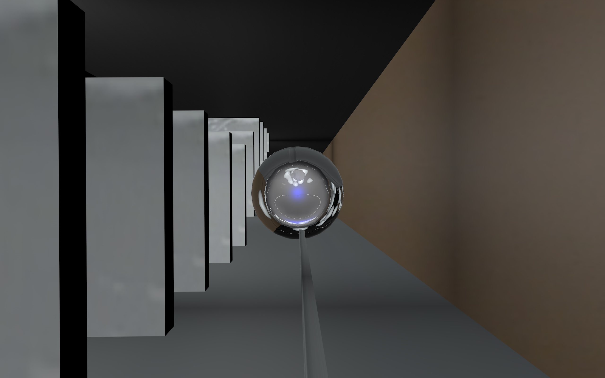
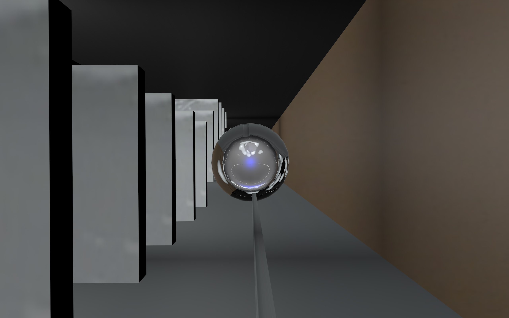
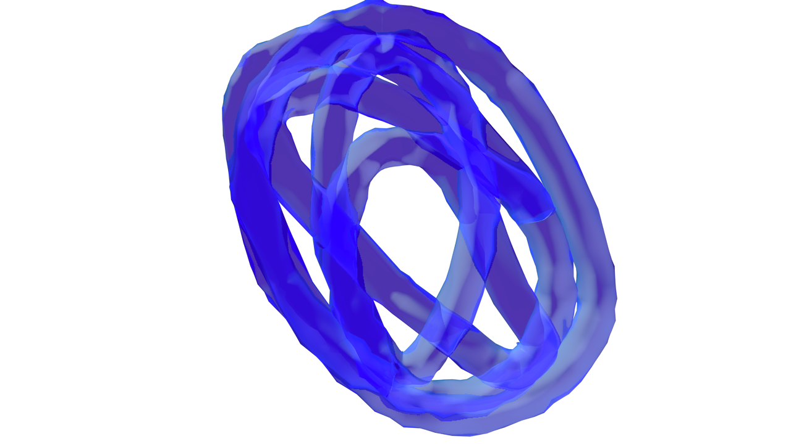
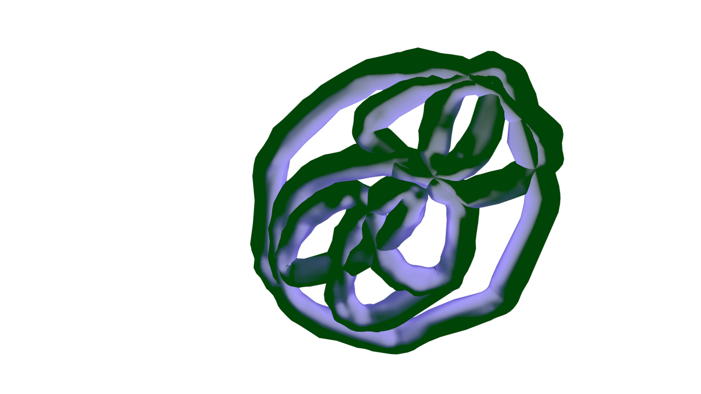
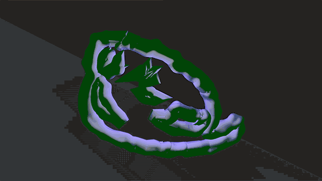
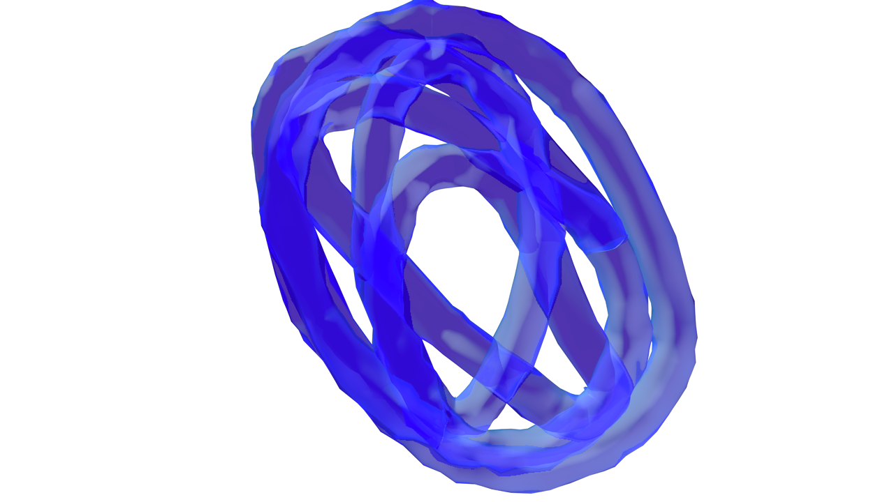
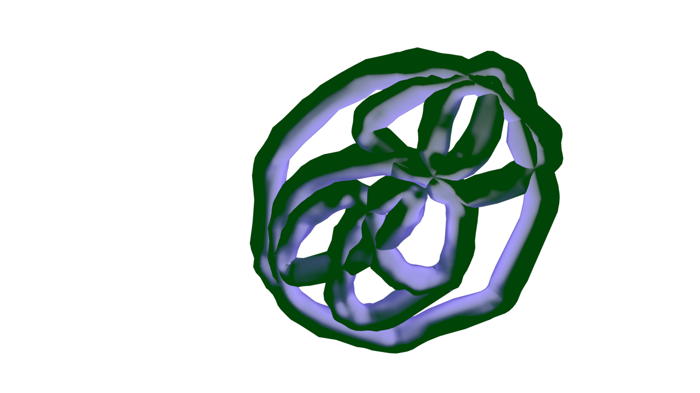
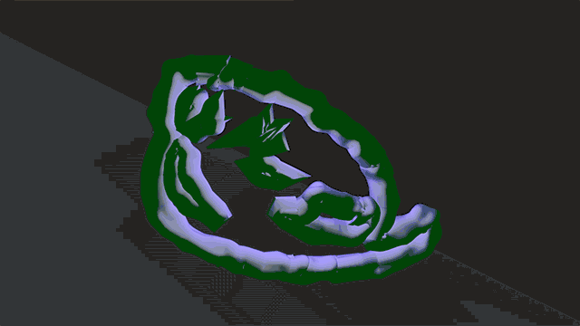

技術進歩によって将来タイポグラフィがどのように変化するかは、興味深い問題である。我々の視覚体験はデジタル機器の進化によって強化され、微粒子を日常的に視認することも可能になるかもしれない。本プロジェクトにおける3D視覚環境は、宇宙から降り注ぐ素粒子を観測する、スーパーカミオカンデ、水チェレンコフ宇宙素粒子観測装置観測所から着想を得ている。本プロジェクトで制作された書体は、ニュートリノと同サイズであると仮定され、2020現在の我々にとっては馴染みが薄く、可読不可能である。
1
Article about neutrinos in ideas.ted
https://ideas.ted.com/could-the-neutrino-hold-the-answers-to-some-of-the-universes-big-questions/
Koyagire, Tsurayuki Kino, 9-10th century (old japanese calligraphy found from one piece of a lost poem book).
Super-Kamiokande official website
http://www-sk.icrr.u-tokyo.ac.jp/sk/index-e.html
The project was created by Fredrik Backhed during an internship at the multicultural creative studio Mikikado in Berlin 2019-2020.


 


  

 
